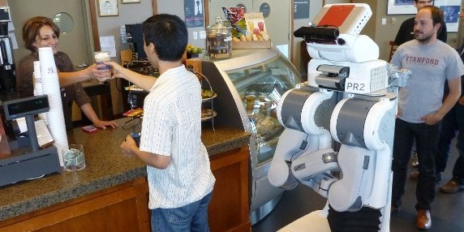
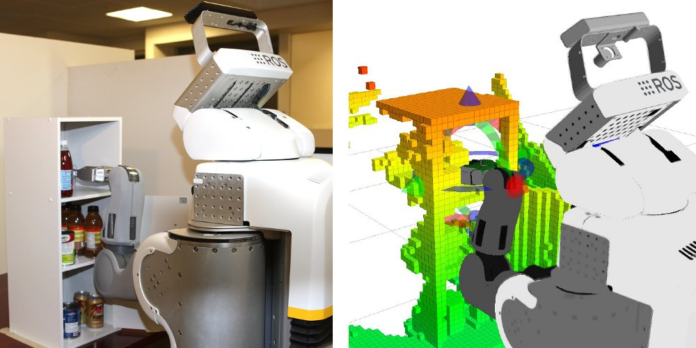
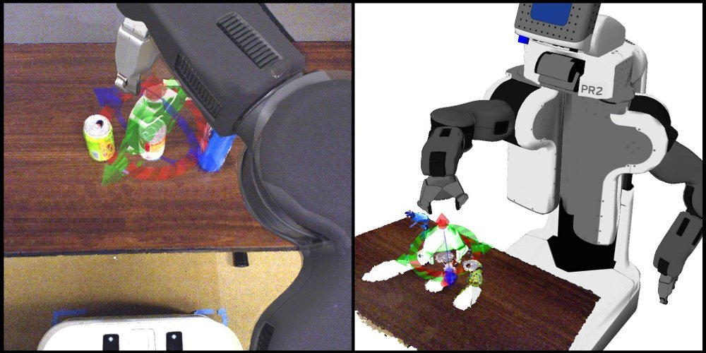
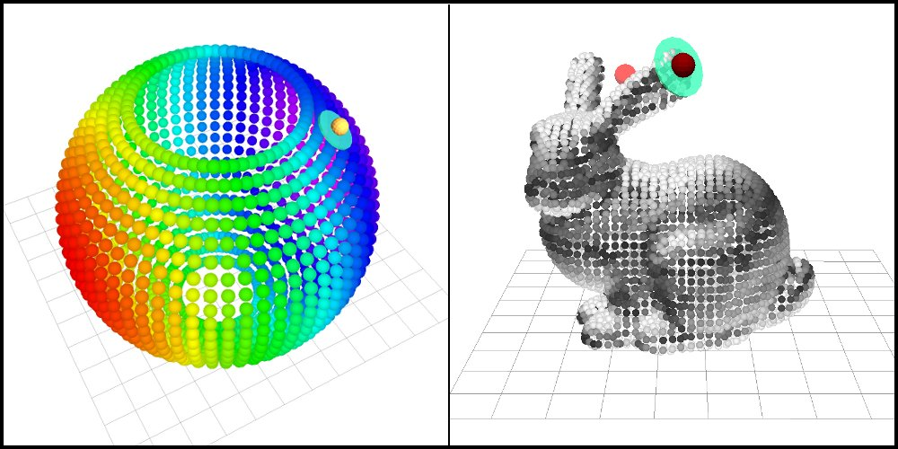
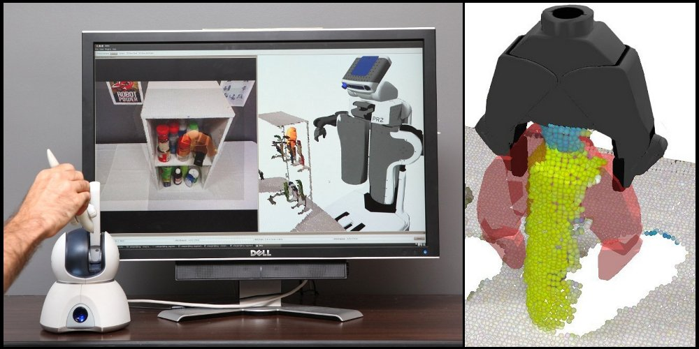
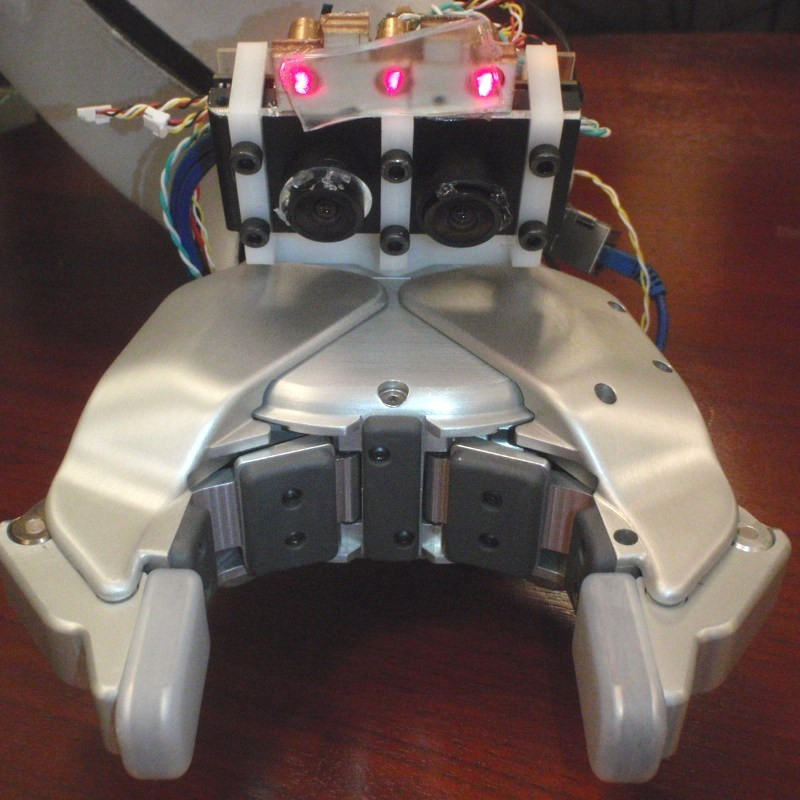
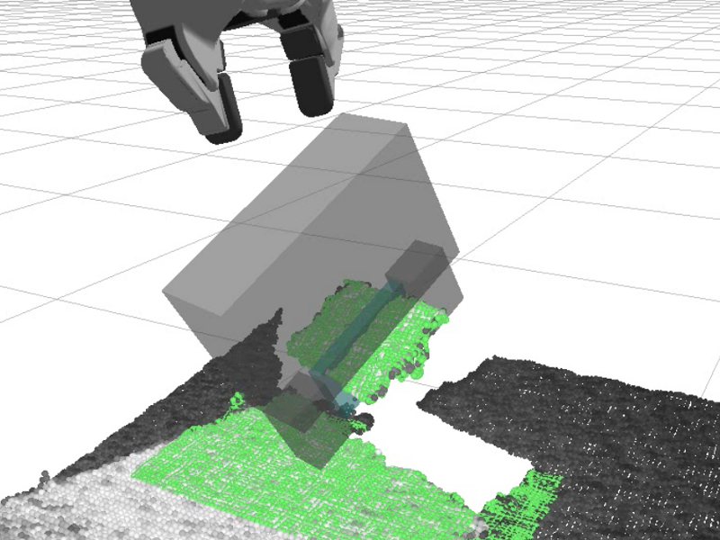
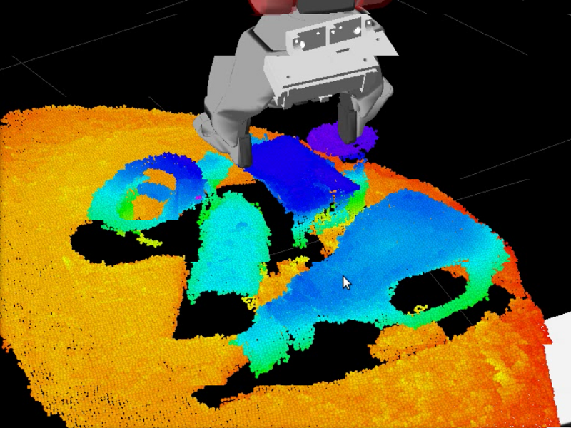

|
Adam E. Leeper - Research
Research conducted in connection with the Stanford University
Salisbury BioRobotics Laboratory and Willow Garage.
Ph.D. Thesis
[ pdf ]
Abstract snippet:
This dissertation presents methods for robot teleoperation, or equivalently, human-in-the-
loop robotics. Human-in-the loop systems have the potential to handle complex tasks by
combining the cognitive skills of a human operator with autonomous tools and behaviors.
Along these lines, we present novel methods in grasp planning, haptic (force-feedback)
rendering, and robot control which allow synergy in interaction between a human operator
and a robot. We describe the interfaces that employ these algorithms, and validate them
through user experiments. Our goal is to see robot technologies make a bigger impact in
peoples’ everyday lives, getting robots out of the laboratory and factory, and into homes,
offices, and other unstructured human spaces.
Mobile Manipulation
|
 |
Robots seldom leave the factory or the research lab.
This project,
featured in IEEE Spectrum,
is about getting robots to do things in unmodified human environments.
As a first step, the robot was programmed to autonomously go from the 1st
floor of the building to the coffee shop on the 3rd floor, interact with the
staff to purchase a drink, and deliver the drink to a thirsty programmer
back in the lab.
|
[ pdf ]
[ YouTube Video ]
Anthony Pratkanis, Adam Eric Leeper, Kenneth Salisbury.
Replacing the Office Intern: An Autonomous Coffee Run with a Mobile Manipulator.
ICRA, May 2013, Germany.
Assisted Teleoperation
|
 |
This project combines elements of telerobotics, haptics, perception, planning, and control
to create a flexible, powerful tool to assist teleoperators.
The main thesis of this work is that there is no single best method for arm teleoperation
when the goal is to work quickly while avoiding bad collisions.
Instead, some sub-tasks will benefit from a responsive, predictable, “dumb” controller,
while in other cases a global motion planner will be the fastest way to accomplish a subtask.
|
[ pdf ]
[ YouTube Video ]
Adam Leeper, Kaijen Hsiao, Matei Ciocarlie, Ioan Sucan, and Kenneth Salisbury.
Methods for Collision-Free Arm Teleoperation in Clutter Using Constraints from 3D Sensor Data.
2013 IEEE-RAS International Conference on Humanoid Robots. October, 2013. Atlanata, Georgia.
Human-in-the-Loop Robotics
|
 |
This project seeks to create efficient tools for directing a robot to perform manipulation tasks
through mixed-initiative or shared-autonomy strategies.
While initially we targeted remote manipulation scenarios (where the robot may be in another room, or another state),
we have also found applications in helping a disabled person to be able to manipulate his own nearby environment.
These tools can be used as part of a larger human-in-the-loop robotic task system, where the robot is able to ask a human operator for help when it encounters an unusual situation. Such systems may be able to bring useful robot technologies to market long before a fully autonomous robot is reliable enough for wide-scale deployment.
|
[ pdf ]
[ video (11MB) ]
A. Leeper, K. Hsiao, M. Ciocarlie, L. Takayama, D. Gossow.
Strategies for Human-in-the-Loop Robotic Grasping.
HRI, March 2012, Boston, MA.
[ pdf ]
[ video (10MB) ]
M. Ciocarlie, K. Hsiao, A. Leeper, D. Gossow.
Mobile Manipulation Through An Assistive Home Robot.
IROS, September 2012, Vilamoura, Algarve, Portugal.
Constraint-based Haptic Rendering of Point Clouds
3-DOF Rendering
|
 |
We present a constraint-based haptic rendering
algorithm for arbitrary point cloud data. With the recent
proliferation of low-cost range sensors, 3D point cloud data
is readily available at high update rates. Challenges in haptic
rendering of this data arise due to noise and poorly defined
surface composition. We propose that point cloud data can be
rendered as an implicit surface, which can be formulated to be
mathematically smooth and efficient for computing interaction
forces. This method is resistant to sensor noise, makes no
assumptions about surface connectivity or orientation, and has
fast pre-processing suitable for streaming data from a sensor.
|
[ pdf ]
[ video (5MB) ]
A. Leeper, S. Chan, K. Salisbury.
Point Clouds Can Be Represented as Implicit Surfaces for Constraint-Based Haptic Rendering.
ICRA, May 2012, St Paul, MN.
6-DOF Rendering
|
 |
We present an efficient 6-DOF haptic algorithm for rendering
interaction forces between a rigid proxy object and a set of unordered
point data. We thus explore the use of haptic feedback for remotely
supervised robots performing grasping tasks. The robot captures
the geometry of a remote environment (as a cloud of 3D points) at
run-time using a depth camera or laser scanner. An operator then
uses a haptic device to position a virtual model of the robot gripper
(the haptic proxy), specifying a desired grasp pose to be executed by
the robot. The haptic algorithm enforces a proxy pose that is non-
colliding with the observable environment, and provides both force
and torque feedback to the operator. Once the operator confirms the
desired gripper pose, the robot computes a collision-free arm
trajectory and executes the specified grasp. We apply this method for
grasping a wide range of objects, previously unseen by the robot,
from highly cluttered scenes typical of human environments.
|
[ pdf ]
[ youtube ]
[ video (11MB) ]
A. Leeper, S. Chan, K. Hsiao, M. Ciocarlie, K. Salisbury.
Constraint-Based Haptic Rendering of Point Data for Teleoperated Robotic Grasping.
Haptics Symposium, March 2012, Vancouver, BC, Canada.
Assisted Teleoperation
The overall goal of this research was to investigate methods to augment remote teleoperation of a robot.
We approached this by employing an end-effector mounted stereo camera, and by demonstrating an algorithm for automated grasp adjustment.
Portions of this work are published in:
[ pdf ]
[ youtube ]
A. Leeper, K. Hsiao, E. Chu, and K. Salisbury.
Using Near-Field Stereo Vision for Robotic Grasping in Cluttered Environments.
Proceedings of ISER 2010. Dec, 2010.
Another video summarizing portions of this work is on youtube here.
Gripper Stereo
|
 |
We prototyped a variety of miniature stereo camera sensors designed for use on a robot end-effector.
This provides 3D information needed for pose estimates along with shape, color, texture, and other local surface information.
|
Grasp Selection Using 3D Point Cloud Features
|
 |
[ video (5MB) ]
To demonstrate the utility of the above sensor we created an algorithm for automatically finding or adjusting grasp poses.
The algorithm attempts to optimize the value of a grasp position by evaluating features of the 3D data.
The grasp adjustment algorithm was implemented to inteface with ROS, an open-source robotics platform.
We demonstrated that the algorithm is useful for autonomous grasping and also as a grasp suggestion tool for teleoperation (see below).
It was generalized to work with any 3D point cloud sensor on a robot, and we have started integrating it into other parts of the ROS grasping tools.
Details of the software can be found at pr2_grasp_adjust.
|
Assisted Grasping for Teleoperation
|
 |
We integrated the above technology into a teleoperation system using a PR2 robot from Willow Garage.
The gripper stereo sensor was mounted to the gripper of the PR2, and we enabled joystick-driven arm control from a head- or gripper-camera perspective.
The automatic grasp adjustment algorithm was integrated into this system to allow the teleoperator to move into the vicinity of an object and then execute a grasp with a couple of button presses, saving from the possible embarassment of knocking an object over by clumsy joystick movements.
In a related strategy, the vision system enables control or constraint of some
of the the robot's motions in the vinicinty of an object, thus reducing the number of degrees of
freedom that the operator must control and reducing cognitive load.
|
|